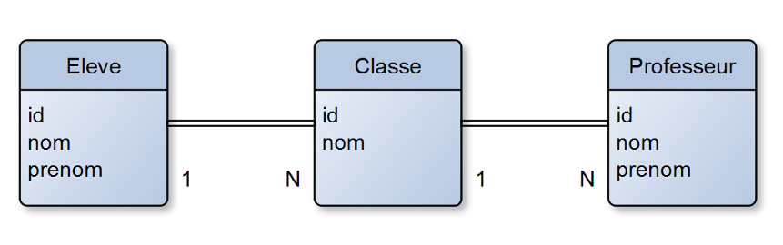
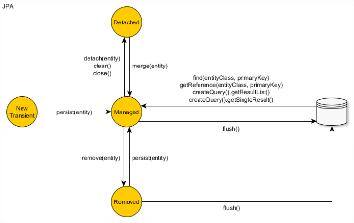

public boolean equals(Object other) {
if (this == other) return true;
if (getClass() != obj.getClass()) => MAL
if ( !(other instanceof Cat) ) return false; => BienHIBERNATE
ASTUCES ET ANTI-PATTERNS
Pierre LEPLAY
GitHub / @PierreLeplay

Qui suis-je ?
Développeur avec 15 ans d’expérience
Passionné de la veille technologie
Membre de la startech Java

Petite histoire d’hibernate
Hibernate est un ORM (Object Relational Mapping) créé par Gavin King en 2001.
Il est destiné à simplifier le développement des applications CRUD
Souvent décrié
Les principales versions d’hibernate :
2001 Première version
2005 Hibernate V3
2010 Hibernate V3.5 (Certification JPA 2.0)
2012 Hibernate V4
2015 Hibernate V5
Contexte technique de la démo
Spring boot 1.4 / Hibernate 5
Base embarquée : HSQLSB
Via des TU
Avec un jeu de test chargé à l’initialisation
Le schéma

La colonne id de chaque table correspond à un id technique auto incrémenté. La colonne Eleve.nom est unique (Unique constraint)
1 - Les logs
Démo
Les logs : conclusions
Pour afficher les requêtes SQL générées : Dans le logger, passer le package org.hibernate.SQL à un niveau debug ou mettre la propriété hibernate « show_sql » à true
Pour formater la requête : Mettre la propriété hibernate « format_sql » à true
Pour indiquer la provenance de la requête : Mettre la propriété hibernate « use_sql_comments » à true
Pour afficher les paramètres de la requête : Dans le logger passer le package org.hibernate.type au niveau trace
2 - Les paramètres des requêtes
Démo
Les paramètres : conclusions
Hibernate protége les paramètres des requêtes.
L’utilisation des paramètres ne génère qu’une seule requête
Hibernate peut prendre en paramètre des listes
3 - Le chargement des entity
Démo
Le chargement des entity : conclusions
L’option « enable_lazy_load_no_trans » Mauvaise pratique car elle crée une nouvelle session temporaire à chaque fois que l’on charge une entity « Lazy »
Le type de chargement « eager » entraîne le problème des requêtes « n+1 »
Le type de chargement « eager » est très dur à désactiver contrairement au « Lazy »
4 - Un problème dans un batch d’insertion massive
Démo
Caches disponibles dans hibernate :
cache de premier niveau : son utilisation est implicite car il est toujours actif. Son champ d’action est limité à la transaction courante.
cache de second niveau : son utilisation est optionnelle. Son champ d’action est l’application (SessionFactory) : il est donc utilisable par toutes les transactions.
le cache des requêtes : son utilisation est optionnelle. Sa mise en oeuvre utilise le cache de second niveau.
Un problème dans un batch d’insertion massive: conclusions
L’utilisation du cache de premier niveau est implicite.
On peut vider partiellement le cache via la méthode evict ou totalement via la méthode clear
Le cache de premier ou de deuxième niveau ne fonctionne que lorsqu’on récupère les entity via leur identifiant
5 - Les problématiques de cache
Démo
Les problématiques de cache : conclusions
Une requête « Native SQL » est exécutée immédiatement
Une requête « Native SQL » ne gère pas le cache
On peut rafraichir manuellement une entity via getEntityManager().refresh(e);
On peut synchroniser la session avec la base de donnée via un flush : getEntityManager().flush();
6 - Les problématiques de cache partie 2
Démo
Les différents états des entity :
New(transient) : Nouvel objet qui vient d’être créé, il n’est pas associé à la session hibernate et il n’est pas persisté. Il n’a pas encore d’identifiant technique associé.
Persistent (Managed) : L’entity est déjà persisté en base et il est associé à la session hibernate. Toute modification sera prise en compte.
Detached : L’entity a été associé à une session hibernate qui a été depuis fermée. Aucune modification ne sera prise en compte.
Removed : L’entity va être supprimée. La requête sera exécutée au prochain flush.
Les transitions entre les différents états des entity

7 - Cache pour les requêtes
Démo
Cache pour les requêtes : conclusions
Le cache sur les requêtes , stocke uniquement les identifiants des entitys et non l’entity
Seuls les type primitifs et les objets simples sont mis en cache, pas les collections.
On peut rajouter des caches sur ces collections.
8 - Les problématiques de sauvegarde
Démo
Extrait de la documentation d’hibernate:
You have to override the equals() and hashCode() methods if you : - intend to put instances of persistent classes in a Set (the recommended way to represent many-valued associations) and - intend to use reattachment of detached instances Hibernate guarantees equivalence of persistent identity (database row) and Java identity only inside a particular session scope. So as soon as we mix instances retrieved in different sessions, we must implement equals() and hashCode() if we wish to have meaningful semantics for Set
Donc à ne pas utiliser si vous n’en avez pas besoin !
Règles d’or pour les hashcode
On ne peut pas utiliser la méthode equals d’Object , car un même entity chargé dans 2 sessions différentes donneront 2 instances différentes
On ne peut pas utiliser l’id technique car si l’entity n’est pas persisté, il n’a pas d’id technique
Il faut utiliser une clé métier
Dans la méthode equals , il ne faut pas comparer les classes mais simplement s’il instancie la classe de l’entity à cause des proxy.
Exemple de comparaison de classes
Ce qui n’a pas été abordé
taille des fetch. Lorsqu’on effectue une requête avec plusieurs jointures, la taille des résultats peut être importante.
requête paginée
comment mettre à jour une relation oneToMany à partir d’un DTO
Des questions ?
DONC, passionné et fier de l’être ?
Rejoins-nous !
Inscription au StarTECH Java